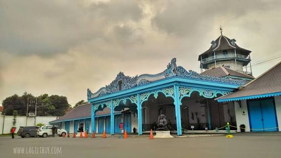

Pengantar
Kota Solo memiliki banyak destinasi wisata bersejarah yang mencerminkan kekayaan budaya Jawa. Berbagai tempat seperti keraton, kawasan batik, taman budaya, hingga bangunan bersejarah menjadi bukti perkembangan Kota Solo dari masa kerajaan hingga sekarang. Halaman ini menampilkan beberapa heritage places yang dapat dikunjungi wisatawan di Kota Solo.Sejarah destinasi wisata

Taman Sriwedari
Taman bersejarah dan pusat kegiatan seni budaya di Kota Solo.
info lengkap : Taman Sriwedari dibangun sekitar tahun 1899 pada masa pemerintahan Pakubuwono X. Awalnya taman ini dibuat sebagai tempat hiburan keluarga Keraton Surakarta, jadi dulu bukan taman umum bebas masuk kayak sekarang.Nama awalnya Kebon Raja karena dipakai khusus lingkungan kerajaan. Lama-lama dibuka untuk masyarakat supaya warga Solo juga bisa menikmati pertunjukan seni dan hiburan rakyat.Sejak awal abad ke-20, Sriwedari berkembang jadi pusat kegiatan budaya kota Solo, terutama,pertunjukan Wayang Orang Sriwedari,kesenian tradisional Jawa,hiburan rakyat,acara perayaan kota.Pada masa kolonial sampai setelah kemerdekaan, tempat ini tetap jadi ikon ruang hiburan budaya masyarakat Solo. Sampai sekarang Sriwedari masih dipakai untuk kegiatan seni dan acara publik.
Jam buka: 10.00 – 22.00
Lokasi: Jalan. Slamet Riyadi No.275, Laweyan, Kota Surakarta
Tiket masuk: Rp 7.000
Rating : ★★★★ 4.4/5 (7,2rb ulasan wisatawan)

Lokananta
Studio rekaman pertama dan tertua di Indonesia yang berlokasi di Solo.
info lengkap : Lokananta didirikan tahun 1956 sebagai studio rekaman pertama di Indonesia. Tempat ini awalnya digunakan untuk merekam siaran Radio Republik Indonesia (RRI) dan menyimpan arsip musik nasional seperti lagu daerah, pidato kenegaraan, serta rekaman budaya Nusantara.Fungsi sekarang Sekarang Lokananta menjadi destinasi wisata edukasi musik dan sejarah. Pengunjung bisa melihat koleksi piringan hitam, alat rekaman lama, studio musik, serta area kreatif modern.Keunikan tempat ini menjadi,Studio rekaman tertua di Indonesia,Menyimpan ribuan arsip musik tradisional,Pernah merekam lagu nasional dan pidato penting negara,Sekarang jadi ruang kreatif dan wisata sejarah musik.
Jam buka: 09.00 – 16.00 WIB
Lokasi:Jalan. Ahmad Yani No.379, Kerten, Laweyan, Surakarta
Tiket masuk: Rp 20.000
Rating : ★★★★ 4.8/5 (3,2rb ulasan wisatawan)

Patung Slamet Riyadi
Patung pahlawan nasional yang menjadi ikon Kota Solo.
info lengkap :Slamet Riyadi adalah pahlawan nasional dari Solo yang gugur saat mempertahankan Indonesia di pertempuran melawan Belanda.Makanya dibuat patung. Bukan dekorasi taman biasa.Patung ini dibuat untuk mengenang jasa pahlawan nasional,simbol perjuangan masyarakat Solo,ikon kota Solo,titik pusat kawasan wisata kota lama Saat ini, Patung Slamet Riyadi menjadi salah satu landmark terkenal di Kota Solo dan sering dijadikan tempat berfoto serta lokasi kegiatan budaya seperti car free day dan festival kota.
Jam buka: 24 jam
Lokasi: Perempatan Gladag, Jalan Slamet Riyadi, Kota Solo.
Tiket masuk: Gratis
Rating : ★★★★ 4.6/5 (1,4rb ulasan wisatawan)

Keraton Kasunanan Surakarta
Pusat budaya Jawa dan istana resmi Kasunanan Surakarta.
info lengkap : Didirikan tahun 1745 oleh Pakubuwono II.Keraton ini pusat kerajaan Mataram yang pindah dari Kartasura ke Solo setelah konflik besar waktu itu.Sekarang masih dipakai keluarga kerajaan. Jadi bukan museum kosong doang.Meskipun bukan pusat pemerintahan politik, Keraton Surakarta tetap menjadi pusat pelestarian seni, adat, dan budaya Jaws.Keraton Surakarta didominasi warna biru, berbeda dengan Keraton Yogyakarta yang berwarna hijau, dan menjadi tempat tinggal Susuhunan yang bergelar Pakubuwono YouTube
Jam buka: 09.00–15.00
Lokasi: Surakarta
Tiket masuk: Rp15.000 – Rp25.000
Rating : ★★★★ 4.6/5 ( 1,7 rb ulasan wisatawan)

Kampung Batik Laweyan
Sentra batik tertua di Kota Solo sejak zaman kerajaan.
info lengkap : Kampung Batik Laweyan sudah ada sejak zaman Kerajaan Pajang (abad ke-16). Awalnya kawasan ini jadi pusat perdagangan benang dan bahan kain, lalu berkembang menjadi sentra produksi batik terbesar di Solo. Pada masa kolonial Belanda, Laweyan terkenal sebagai kampung para juragan batik. Bahkan pengusaha batik di sini dulu termasuk golongan ekonomi kuat di Jawa. Sampai sekarang Laweyan tetap jadi pusat batik tradisional sekaligus kawasan wisata budaya.
Jam buka: 08.00–17.00 WIB
Lokasi:Kelurahan Laweyan, Kota Surakarta.
Tiket masuk: Gratis
Rating : ★★★★ 4.6/5 ( 1,1 rb ulasan wisatawan)

De Tjolomadoe
Bekas pabrik gula yang berubah menjadi destinasi wisata modern.
info lengkap :De Tjolomadoe merupakan bekas pabrik gula Colomadu yang dibangun tahun 1861 oleh Mangkunegara IV. Setelah berhenti beroperasi tahun 1998,Pabrik ini menjadi salah satu pabrik gula terbesar dan paling modern di Jawa pada zamannya. Produksi gula dari pabrik ini bahkan pernah diekspor ke luar negeri dan menjadi sumber ekonomi penting bagi wilayah Surakarta.Setelah beroperasi lebih dari 130 tahun, pabrik gula ini berhenti beroperasi pada tahun 1998 karena perkembangan industri dan perubahan kondisi ekonomi.Bangunan pabrik kemudian direvitalisasi oleh pemerintah dan diresmikan kembali pada tahun 2018 dengan nama De Tjolomadoe sebagai kawasan wisata sejarah, museum industri, dan pusat kegiatan budaya modern.bangunan ini direnovasi menjadi museum dan pusat kegiatan budaya modern.Sekarang dipakai untuk museum industri gula,konser,pameran,event nasional
Jam buka: 10.00 – 17.00 WIB
Lokasi: Malangjiwan, Colomadu, Karanganyar (dekat Solo).
Tiket masuk: Rp25.000 – Rp35.000
Rating : ★★★★ 4.6/5 ( 2,2 rb ulasan wisatawan)

Pasar Triwindu
Pasar barang antik terkenal di Kota Solo.
info lengkap :Pasar Triwindu dibangun pada tahun 1939 oleh Mangkunegara VII untuk memperingati 24 tahun masa pemerintahannya sebagai Adipati Mangkunegaran.Awalnya pasar ini digunakan sebagai tempat penjualan barang kebutuhan masyarakat. Seiring waktu, Pasar Triwindu berkembang menjadi pusat perdagangan barang antik dan koleksi bersejarah yang terkenal hingga luar Kota Solo.Sekarang Pasar Triwindu dikenal sebagai salah satu pasar barang antik paling terkenal di Indonesia.
Jam buka: 09.00 – 16.00 WIB
Lokasi: Dekat Pura Mangkunegaran di kawasan Ngarsopuro, Kota Surakarta.Kelurahan Laweyan, Kota Surakarta.
Tiket masuk: Gratis
Rating : ★★★★ 4.6/5 ( 3,3 rb ulasan wisatawan)

Pura Mangkunegaran
Pura Mangkunegaran di Surakarta Sebagai pusat seni budaya Jawa, pura ini memiliki pendopo terluas di Indonesia, arsitektur perpaduan Jawa-Eropa, museum, dan perpustakaan, serta menjadi destinasi wisata sejarah.
info lengkap :Pura Mangkunegaran didirikan tahun 1757 oleh Mangkunegara I setelah terjadinya Perjanjian Salatiga. Perjanjian ini membagi kekuasaan wilayah Mataram menjadi beberapa bagian, salah satunya Kadipaten Mangkunegaran. Sejak saat itu, Pura Mangkunegaran menjadi pusat pemerintahan dan kebudayaan Mangkunegaran di Kota Solo.Fungsi sekarang Masih digunakan sebagai pusat kegiatan budaya Jawa seperti tari tradisional, gamelan, upacara adat, dan juga dibuka sebagai tempat wisata sejarah.Keunikan bangunan Memiliki Pendopo Ageng yang termasuk salah satu pendopo terbesar di Indonesia. Arsitekturnya perpaduan gaya Jawa tradisional dan sentuhan Eropa.
Jam buka: 09.00 – 15.00 WIB
Lokasi: jalan Ronggowarsito, Keprabon, Banjarsari, Surakarta
Tiket masuk: Rp20.000 – Rp30.000
Rating : ★★★★ 4.7/5 (9,9rb ulasan wisatawan)